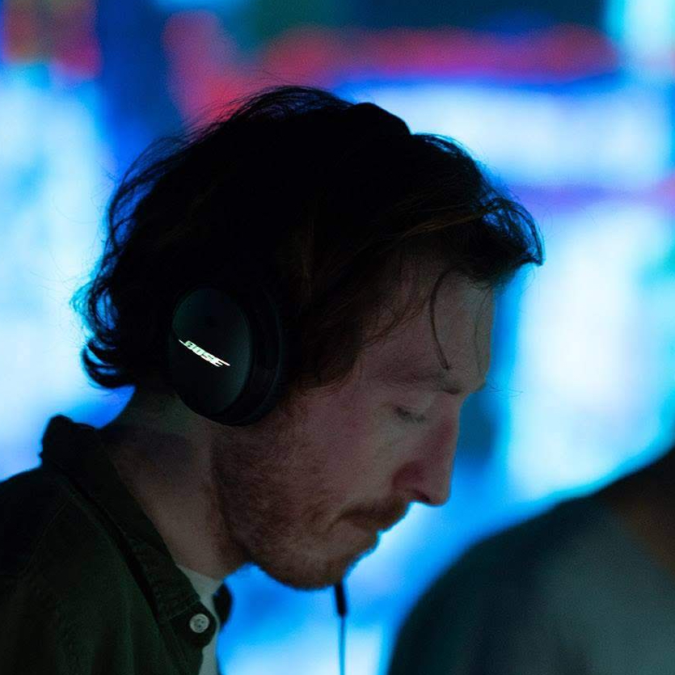

Simon James French AKA SJF is a composer and sound artist from Suffolk, United Kingdom but who now lives between London and Japan.
After studying, he spent a decade away from the UK living in Finland, South Korea, Malaysia, Australia and Japan. Each country and culture quietly lending its influence to his music and composition style.
SJF writes music for moments, places and atmospheres. His music appeals to both late-night contemplation and a longing for far-away places. A master of conveying emotion through stillness; inspired heavily by the work of György Ligeti and the cloud-like textures he created with the orchestra. Simon’s music often presents itself as a dense cloud of sound on first listen; but with repeat plays you’ll discover more and more of the details that makes this music special; the raindrops glistening inside the cloud.
This is music that works well as both background music whilst also lending itself to deep listening.
In Tokyo, he founded the successful Deakin St coffee stand - a local hub for the community to gather; a ‘third space’ for so many. He hosted events and launched the Soundscapes Radio series from within its walls; a monthly series of brand new music where he was completely free to explore his sound and the influence Japan had on it. The music in the episodes was often weaved with field recordings from French’s travels in Japan and around the world.
simonjamesfrench.com